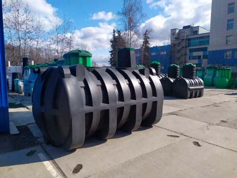
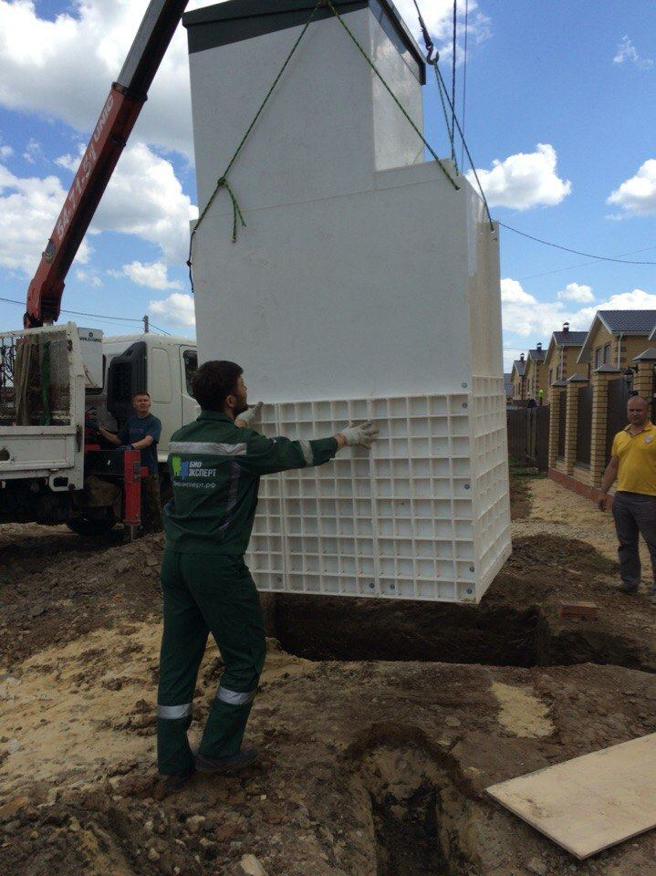
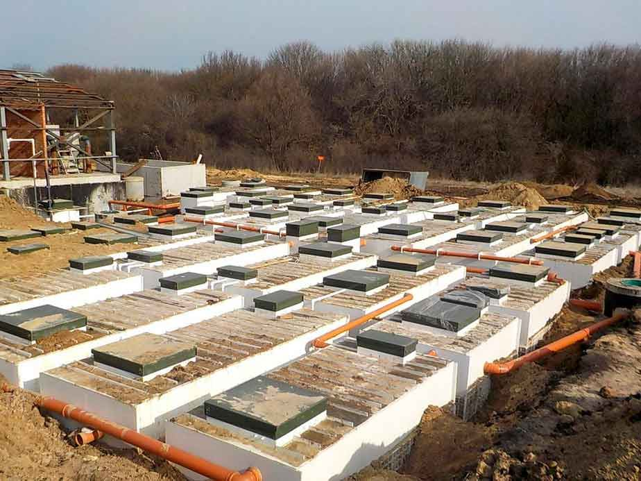
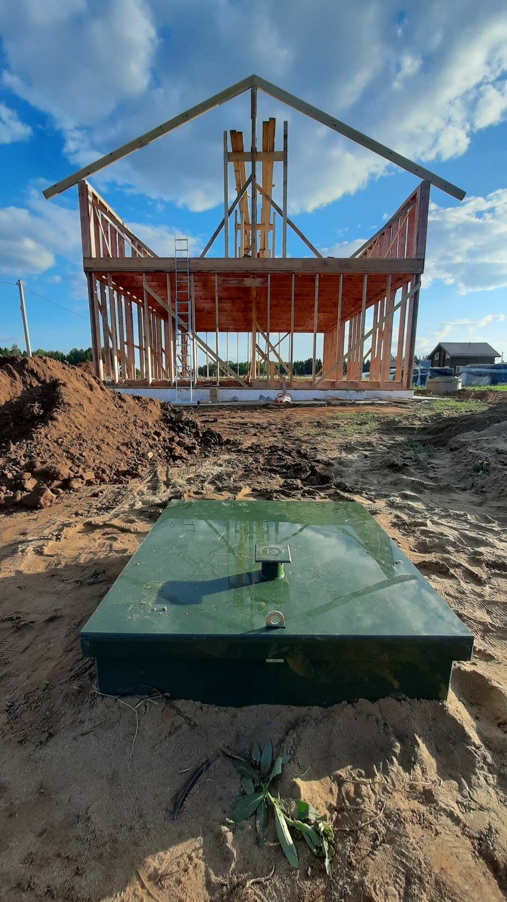
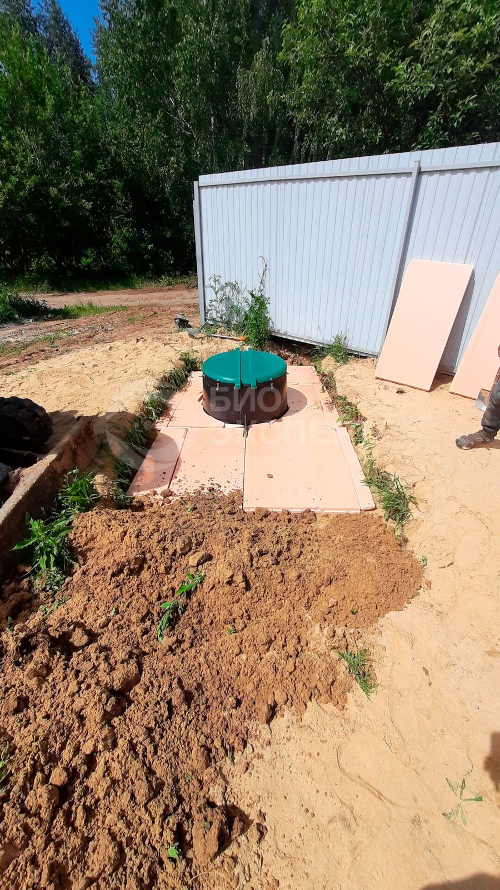
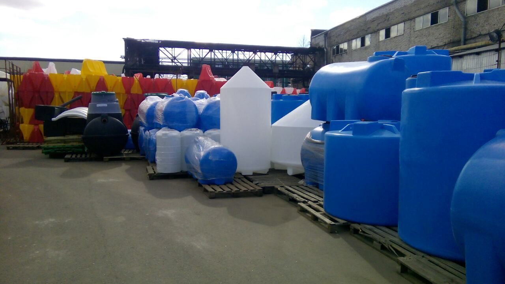
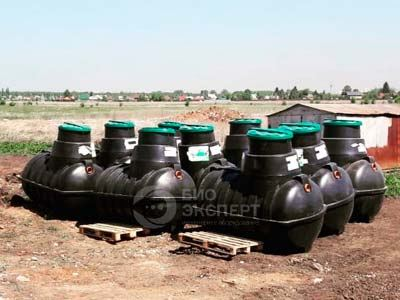

- 20 позиций в прайсе
- Киров, улица Воровского, 103А
- пн-пт 08:30–17:30
Системы водоснабжения и канализации
Системы водоснабжения и канализации, септики, ёмкостное оборудование, резервуары. Цены из прайса — ниже.







Прайс · 20 позиций
Часто берут10
| Монтаж водоснабжения в частном доме под ключ | 20 000 ₽ |
| септик РОСТОК Дачный до 5 человек | 59 394 ₽ |
| Станция Тверь Классик - 0,8 П | 157 700 ₽ |
| Погреб Тингард OPTIMUM S (1,5) пластиковый (кессон) для продуктов | 169 000 ₽ |
| Юнилос АСТРА-5 био септик | 105 840 ₽ |
| Станция биологической очистки Топас 5-С | 152 662 ₽ |
| бак для душа (душевой бак) РОСТОК 110 литров | 7 865 ₽ |
| Волгарь 5-2360-С | 121 285 ₽ |
| Емкость 500 литров для воды, ДТ, масла, пищевая | 10 395 ₽ |
| Монтаж канализации для частного дома, дачи | 20 000 ₽ |
Бытовая канализация / Септики1
| септик РОСТОК Мини | 47 725 ₽ |
Автономная канализация1
| Септик Тверь Аэро - 0,48 | 93 500 ₽ |
Автономная канализация / Септики / Юнилос астра1
| станция септик Юнилос АСТРА-3 | 101 600 ₽ |
Автономная канализация / Септики / Топас2
| ТОПАС-100 очистное сооружение на 100 человек | 1 578 000 ₽ |
| ТОПАЭРО 9 очистная био станция на 50 человек | 714 765 ₽ |
Автономная канализация / Септики / Септик топас с3
| ТОПАС-4 С Топол-Эко | 114 210 ₽ |
| био станция ТОПАС-10 до 10 человек и больше | 208 400 ₽ |
| станция биологической очистки ТОПАС-4 | 109 840 ₽ |
Резервуары пластиковые1
| Емкость для воды, бочка 1000 литров | 18 200 ₽ |
Автономная канализационная установка, станция биологической очистки1
| Евролос Био 3 / био станция / септик | 111 055 ₽ |
Цены из прайса на Яндекс Картах. Наличие и точную цену уточняйте по телефону.
Что важно знать
- Ремонт
- Продажа
- Самовывоз
- Оплата картой
- Доставка
- Парковка для людей с инвалидностью
- Подарочный сертификат
- Прокладка и ремонт труб
- Можно с собакой
- Wi-Fi
- Пандус
Что пишут клиенты
- Один клиент пишет, что купленная станция работает с 2022 года без проблем и запаха, цена хорошая, доставили быстро, всё объяснили и подобрали под требования.
- Другой клиент отмечает грамотную консультацию, заранее завезённые материалы, установку и монтаж, сделанные за день.